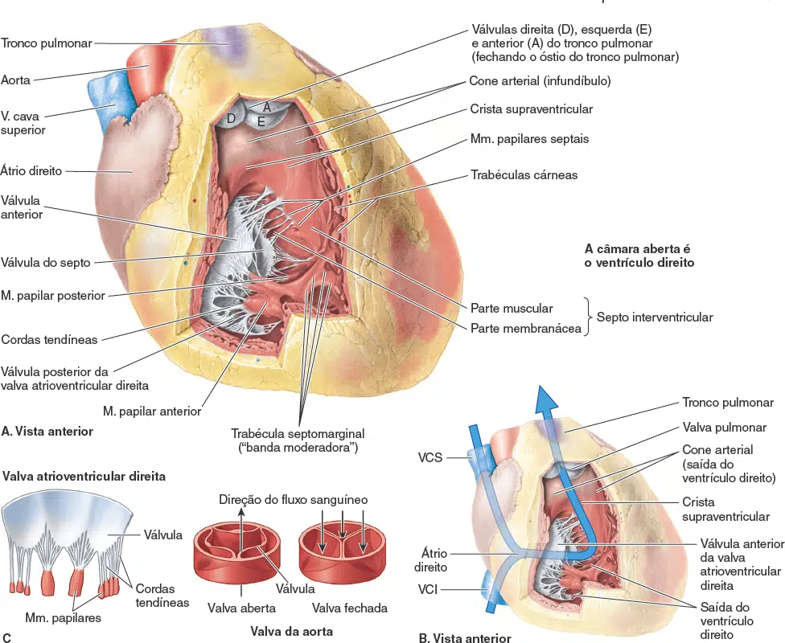
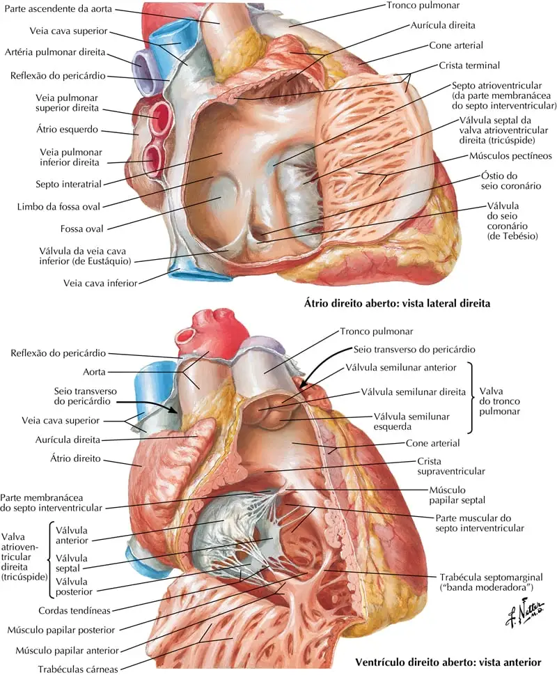
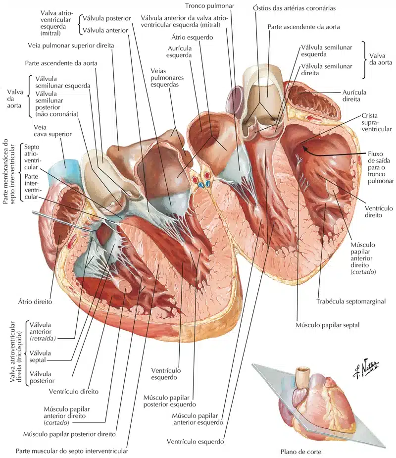

Um septo, em geral, é uma partição que separaduas cavidades ou dois espaços que contêm um material menos denso.
A palavra em latim significa literalmente “algo que contém“.
Septos átrio-ventriculares
O septo interventricular (SIV), composto pelas partes muscular e membranácea, é uma divisória oblíqua forte entre os ventrículos direito e esquerdo, formando parte das paredes de cada um.
Em vista da pressão arterial muito maior no ventrículo esquerdo, a parte muscular do SIV, que constitui a maior parte do septo, tem a espessura igual ao restante da parede do ventrículo esquerdo e salienta-se para a cavidade do ventrículo direito.
Superior e posteriormente, uma membrana fina, parte do esqueleto fibroso do coração, forma a parte membranácea do SIV, muito menor.
No lado direito, a válvula septal da valva atrioventricular direita está fixada ao meio dessa parte membranácea do esqueleto fibroso.
Isso significa que, inferiormente à válvula, a membrana é um septo interventricular, mas superiormente à válvula, é um septo atrioventricular, que separa o átrio direito do ventrículo esquerdo.

MOORE: Keith L. Anatomia orientada para a clínica. 9 ed. Rio de Janeiro: Guanabara Koogan, 2024.
MOORE: Keith L. Anatomia orientada para a clínica. 9 ed. Rio de Janeiro: Guanabara Koogan, 2024.
Septo interatrial
O septo interatrial é uma parede muscular sólida que separa os átrios direito e esquerdo.
A parede septal no átrio direito é marcada por uma pequena depressão oval chamada fossa oval.
Este é o remanescente do forame oval no coração do feto, que permite o desvio de sangue da direita para a esquerda para contornar os pulmões.
Fecha quando o recém-nascido respira pela primeira vez.
Septo Interventricular
O septo interventricular separa os dois ventrículos e é composto por uma parte membranosa superior e uma parte muscular inferior.
A parte muscular forma a maioria do septo e tem a mesma espessura que a parede ventricular esquerda.
A parte membranosa é mais fina e parte do esqueleto fibroso do coração.

NETTER: Frank H. Netter Atlas De Anatomia Humana. 7 ed. Rio de Janeiro: Elsevier, 2021.

NETTER: Frank H. Netter Atlas De Anatomia Humana. 7 ed. Rio de Janeiro: Elsevier, 2021.